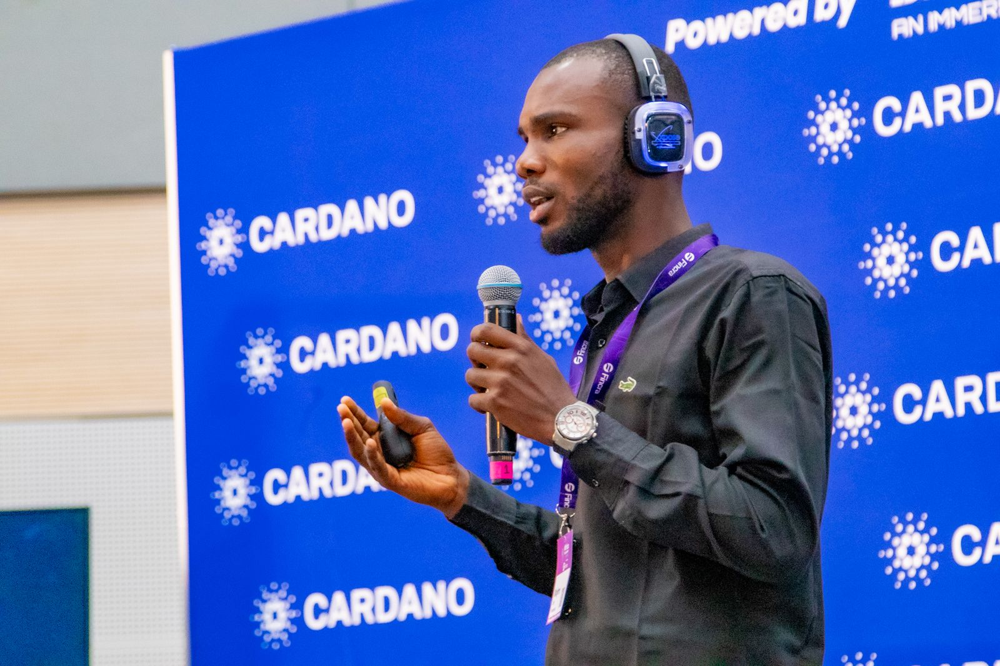
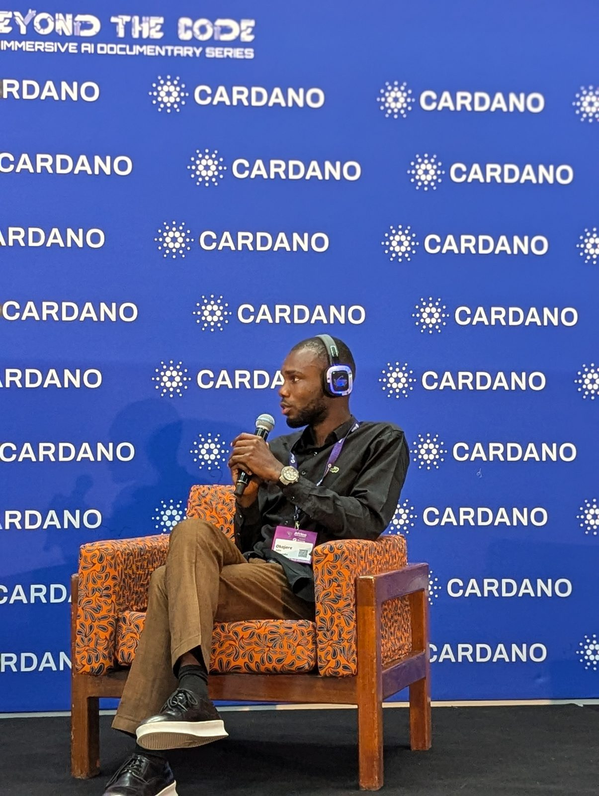

Digital systems
& software
Enterprise platforms, operations and scalable applications.
Technology · Innovation · Security
Chief Technology Officer & Technical Lead / Digi02 Tech Systems
Building digital systems, intelligent infrastructure and emerging technologies for a more connected and secure future.
Top 5 in Africa · Cardano Africa Tech Summit 202601 — THE WORK
John Nnaemeka Okojere is a technology leader and engineer currently serving as Chief Technology Officer and Technical Lead at Digi02 Tech Systems. His work spans technology strategy, software systems, digital infrastructure, product development and emerging technologies.
The longer story →
02 — Digi02 Tech Systems
Chief Technology Officer & Technical Lead
Promoted from Team Lead to Chief Technology Officer, John leads a team of more than 30 people across design, software development, data science and cybersecurity—translating ideas into deployable digital systems.
03 — AREAS OF FOCUS
Current work and long-term research interests, connected by a systems-thinking approach.
Enterprise platforms, operations and scalable applications.
Connected systems and resilient information exchange.
Decision support, automation and intelligent systems.
Mission software, mapping and surveillance concepts.
Space infrastructure and remote connectivity.
Distributed infrastructure and deployable research.
04 — A SYSTEMS VIEW
Modern infrastructure is a continuous chain: each layer expands what the next can achieve.
05 — Security & defence
Modern security operations increasingly depend on software, data, sensors, resilient communications and intelligent systems. John’s interest in defence technology focuses on practical systems for situational awareness, secure communication, surveillance, autonomous platforms and operational decision-making—developed responsibly. That thinking drives SkyGrid, the enterprise UAV operations platform he develops at Digi02.

06 — Pastor & mentor
Adedoyin Akerele is John’s pastor, his father in the Lord and his mentor. Much of who John is today—in faith, in work and in character—he learned from him, as much through his manner of life as through his teaching.
In business, he is the founder of NetHawk Solutions. He has more than 20 years of experience in Nigerian Air Force operations, is qualified as a pilot on six unmanned aircraft platforms, and has worked in aerial surveillance, intelligence and critical-infrastructure protection across the USA, UAE and Europe.
Visit doyinakerele.com ↗07 — SELECTED WORK
DIGI02 TECH SYSTEMS
MEDIA / COMMUNITY
EDTECH
UAV / AUTONOMY
08 — THE LONG VIEW
“Technology leadership is not only about adopting what already exists. It is about understanding systems deeply enough to build what comes next.”
A future focused on stronger digital infrastructure, research, intelligent systems and more meaningful African participation in the technologies shaping the world.
09 — INSIGHTS
Contact
For technology collaborations, research, innovation, software, aerospace, defence-tech or emerging technology conversations.